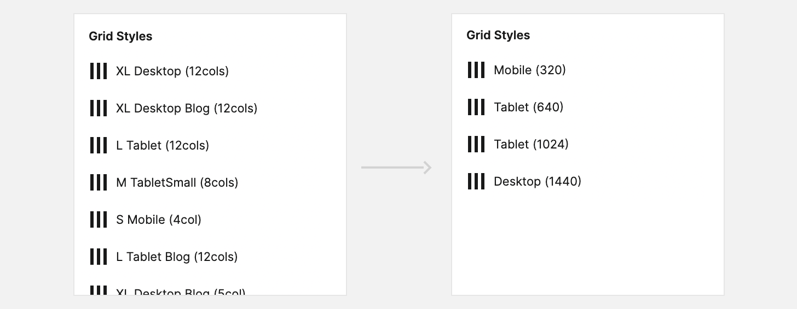
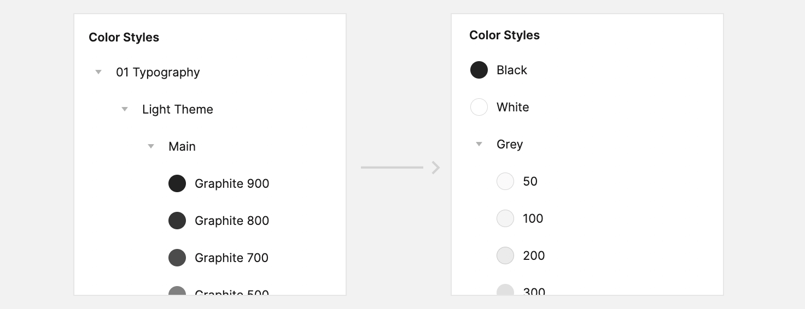
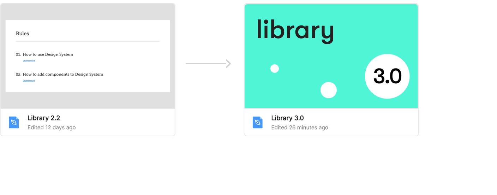

Редизайн платформы и переработка дизайн-системы
Задача
Обновить дизайн всей платформы и дизайн-системы, не прибегая к сложным структурным изменениям самих страниц и флоу. В идеале, упростить процесс фронтенд-разработки до аплифта дизайн-компонентов и дизайн-токенов в сторибуке. До переработки дизайн-системы было проведено UX‑исследование.Челленджи
- Параллельно упростить структуру дизайн-библиотеки в фигме, поскольку предыдущая была слишком большой и медленно работала.
- Проверить компоненты на излишнюю вложенность для ускорения работы всего проекта.
- Убрать неактивные / добавить новые состояния в дизайн-компоненты, т.к. в процессе аплифта некоторые состояния стали неактуальными или добавлялись.
- Учитывать, что редизайн должен безболезненно лечь на текущую платформу в рамках аплифта.
- Поменять структуру компонентов по брейкпоинтам, т.к у платформы изменился лейаут и сетка.
- Обновить некоторые компоненты в соответствии с новыми фичами в дизайн-библиотеке.
Команда
В команде было 3 дизайнера, из которых один был лид-дизайнер (руководил общим дизайн-процессом на проекте) а так же два дизайнера, выполняющие работу по редизайну платформы и дизайн-системы.Мои обязанности
В рамках этого кейса, в мои задачи входила организация процесса редизайна дизайн-системы, непосредственно аплифт самой дизайн-системы, коммуникация с разработчиками, а так же сборка макетов платформы на базе новых компонентов.Работа над редизайном платформы была выстроена следующим образом:

Шаги редизайна дизайн-системы
Исходя из утвержденного драфтового макета главной страницы в новом стиле, мы определили последовательность работ по переработке дизайн-системы:

1. Переработка сеток и брейкпоинтов
Уменьшено количество брейкпоинтов для упрощения верстки и дизайна.

2. Переработка цветов
Изменена иерархия и названия для более удобной навигации.

3. Переработка шрифтовых стилей
Были переделаны шрифтовые стили, упрощена иерархия и названия. Мобильные состояния
шрифтов были упразднены — выбранный шрифт позволил не менять размер Body, Bold
и небольшие заголовки.
На этом моменте мы приступили к редизайну платформы. Каждый новый перерабатываемый компонент мы брали итеративно. Однако, мы так же дорабатывали и дополняли дизайн-токены по мере необходимости.

4. Работа над компонентами дизайн-библиотеки
Было переделано более 100 компонентов в новой библиотеке, среди которых были как
атомы, так и сложные организмы. Удачно подобранный шрифт и его размер позволили
отказаться от мобильных состояний для ряда компонентов.
Было так же переработано более 200 графических компонентов.

Все компоненты пересобирались с учетом старой архитектуры — мы старались сохранять прежнюю структуру веб-страниц для упрощения разработки. Мы пытались интегрировать новый дизайн таким образом, чтобы после изменения сеток, дизайн-токенов и компонентов в сторибуке аплифт страниц произошел практически «автоматически».
Старт разработки
После переработки основной части дизайн-системы и основных страниц, весь скоуп работ по аплифту был передан фронтенд команде. Начался процесс разработки: шел параллельный апдейт компонентов и дизайн-токенов в сторибуке и апдейт самих страниц. Дизайн-команда выполняла проверку компонентов и страниц после аплифта, консультировала разработчиков, а так же вносила некоторые правки от фронтенд команды в процессе разработки.Финал
Аплифт платформы и дизайн-системы был завершен за ±3 месяца. В начале процесса мы рассчитывали на этот срок. Благодаря грамотно выстроенной организации дизайн-процесса, удалось быстро переработать дизайн-систему и выстроить на ее базе более чем 100 страниц платформы. Далее команда разработки смогла выпустить релиз аплифта за ±2 месяца — это отличный результат, на который в т.ч повлияла грамотная работа с дизайн-системой и правильно собранные страницы, которые легко легли на старую архитектуру. Процесс тестирования и доработки платформы и сторибука закончился быстро и обошелся без серьезных багов.
Результаты
- Благодаря грамотно выстроенной организации дизайн-процесса удалось закончить редизайн дизайн-системы и платформы в срок.
- Грамотная подготовка страниц и компонентов помогла разработчикам внести изменения без сложностей и в короткие сроки выпустить релиз.
- Дизайн-библиотека в фигме была сильно упрощена и почищена, стала значительно быстрее работать, навигация в библиотеке упростилась.
- Уменьшилось количество брейкпоинтов за счет подбора более удачной сетки. Это упрощает как последующий дизайн, так и разработку.
- Мобильные состояния для компонентов были упразднены — в результате удачно подобранных размеров шрифтов и элементов необходимость в них отпала. Это упрощает последующий дизайн, создание новых компонентов и редактирование, а так же разработку (как создание новых страниц, так и поддержку сторибука).
До переработки платформы и дизайн-системы было проведено UX-исследование ребрендинга.